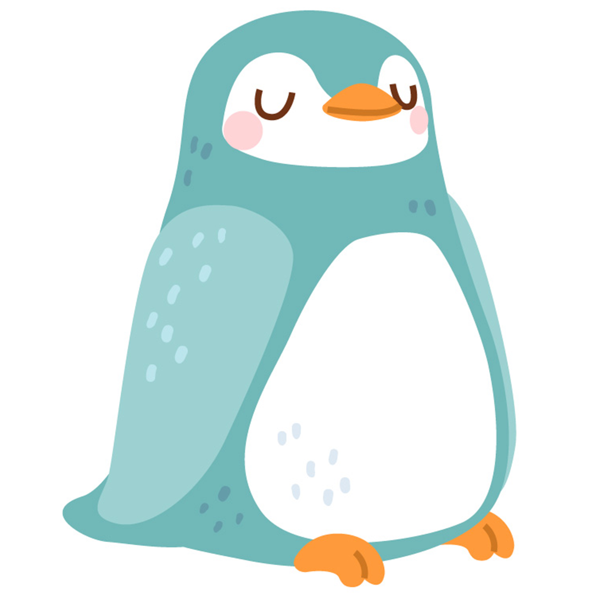

Penguin
Penguins are flightless seabirds that live almost exclusively below the equator. Some island-dwellers can be found in warmer climates, but most—including emperor, adélie, chinstrap, and gentoo penguins—reside in and around icy Antarctica.